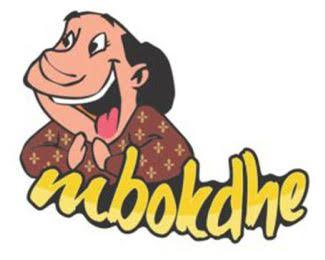
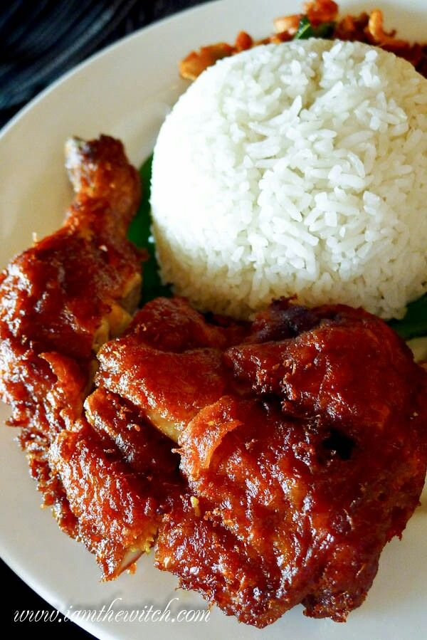
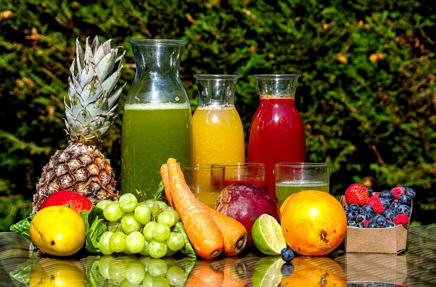

Rasakan kelezatan otentik resep rahasia turun-temurun dari dapur Budhe.

Rp 10.000 / porsi
Perpaduan manis pedas, gurihnya ayam kampung, dan disajikan dengan nasi hangat. Dijamin bikin Nambo Lagi!

Rp 5.000 / gelas
Jus Buah Segar dari buah segar pilihan, Cocok untuk menemani hidangan utama Anda.
Kami menerima pesanan untuk makan siang, rapat, dan acara keluarga.
Hubungi via WhatsApp